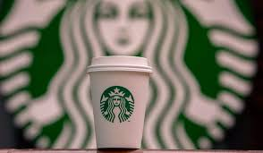

-
1.O nome veio de um livro clássico
O nome Starbucks foi inspirado no personagem Starbuck, o primeiro imediato do navio Pequod no livro Moby Dick, de Herman Melville. Os fundadores queriam algo relacionado ao mar, já que Seattle é uma cidade portuária, e achavam que o nome soava forte e memorável.
-
2. O logo é uma sereia de duas caudas
O famoso logotipo é uma “sirena” (uma sereia mitológica com duas caudas), inspirada em ilustrações de livros nórdicos do século XVI. Ela representa sedução, mistério e a ideia de que o café do Starbucks é “irresistível”.
-
3. A primeira loja ainda existe
A primeira loja do Starbucks foi aberta em 1971 no Pike Place Market, em Seattle. Ela ainda está lá, com visual retrô e filas diárias de turistas e fãs da marca.
-
4. A empresa quase não vendia bebidas no início
Durante os primeiros anos, o Starbucks só vendia grãos de café, chás e equipamentos. As bebidas preparadas vieram depois, graças à visão de Howard Schultz, que se inspirou nas cafeterias italianas.
-
5. Existem bebidas “secretas” no cardápio
A “Starbucks Secret Menu” é uma lista não-oficial de bebidas criadas por clientes e baristas, compartilhadas online. Inclui drinks criativos como “Unicorn Frappuccino”, “Butterbeer Latte” (inspirado em Harry Potter) ou “Pink Drink” (que até virou oficial).
Por isso que conhecer o Starbucks é muito mais do que tomar um café é viver uma experiência única que combina sabor, conforto, conexão e inspiração. Desde o momento em que você entra em uma loja, é possível perceber que ali existe algo especial: o aroma acolhedor do café fresco, o som das conversas leves, o cuidado nos detalhes, a hospitalidade dos baristas e, claro, uma bebida feita exatamente do jeito que você gosta.
flete que
No Starbucks, cada xícara carrega uma história .Você escolhe os ingredientes, personaliza sabores, combina acompanhamentos e transforma um simples pedido em algo que rem você é, o que você gosta e como está se sentindo naquele dia.
